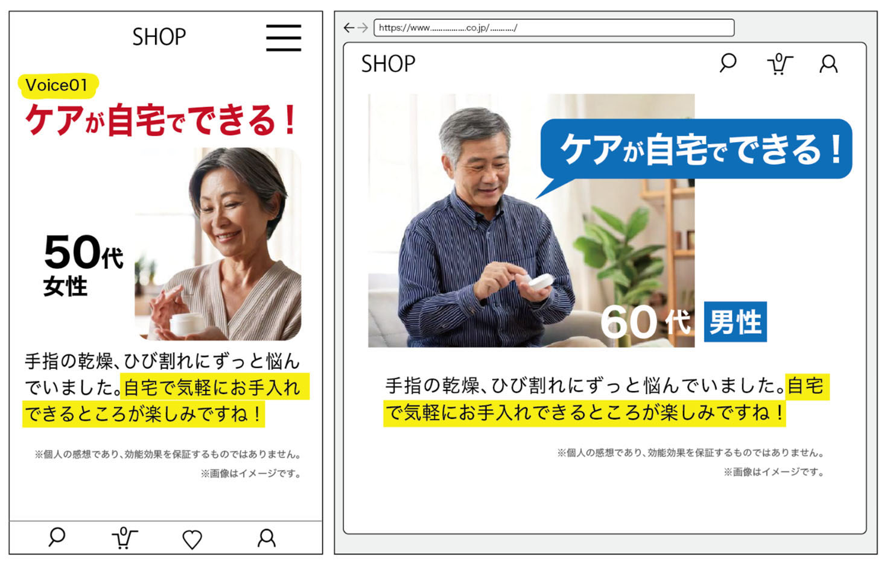

ダークパターン事例⑫ お客様の声(1)
資料での説明
商品等を購入した他の消費者の評価や口コミに関する表示であって、誤解を招くものや虚偽の可能性があるもの
【例】
- 同一の商品に対し、PC及びスマートフォンそれぞれのウェブサイトにおいて、別の人物による口コミとして同じ内容が書かれているため、虚偽の口コミである可能性がある。

example-food.jp/reviews
お客様の声
★5の口コミを表示中
★★★★★
東京都 A.Kさん毎朝すっきり。家族にもすすめたい商品です！
★★★★★
大阪府 M.Sさん毎朝すっきり。家族にもすすめたい商品です！
星1〜2の口コミ 18件は表示していません。
example-food.jp/reviews
購入者レビュー
購入した人かどうかを確認したうえで掲載しています。
★★★★★
購入確認済み 2026年10月12日味は飲みやすいです。2週間続けています。
★★★☆☆
購入確認済み 2026年9月28日配送は早かったです。味は少し甘く感じました。
★☆☆☆☆
購入確認済み 2026年9月2日期待していた変化はありませんでした。残量が多いので返品を検討しています。
解説
同じ文章を別人の口コミとして見せたり、低い評価を最初から出さなかったりすると、評価の全体が分かりません。
改善例では、購入した人かどうかを確認したうえで掲載し、星の数と投稿日を添えます。低い評価も同じ一覧に残します。